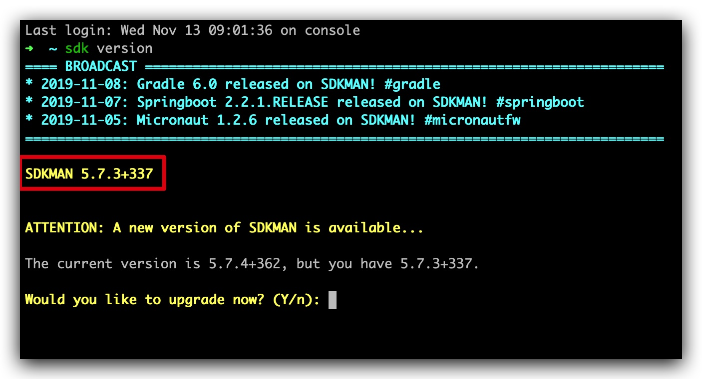
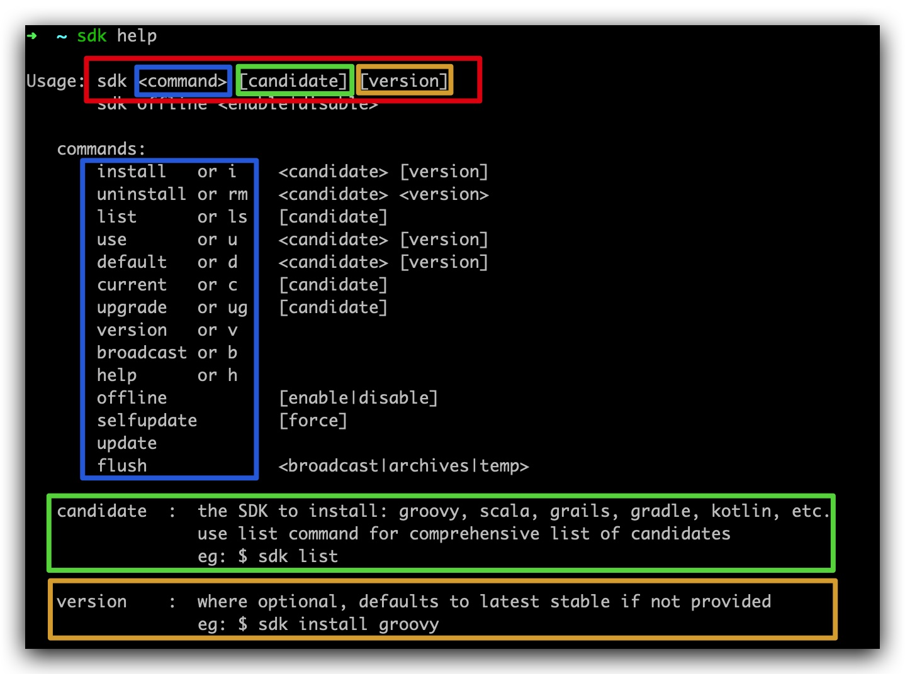
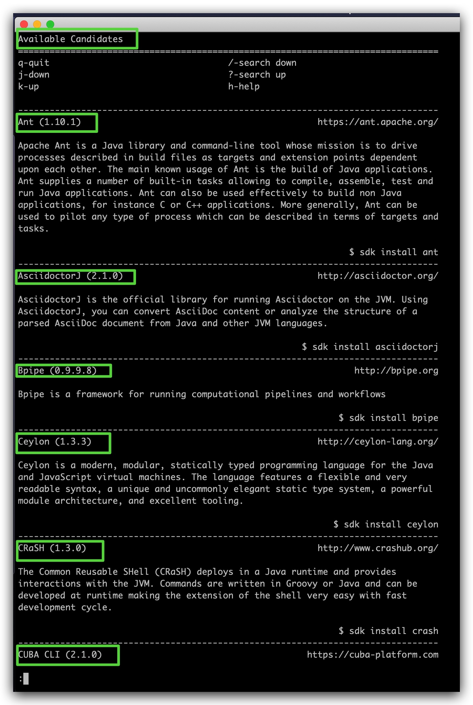
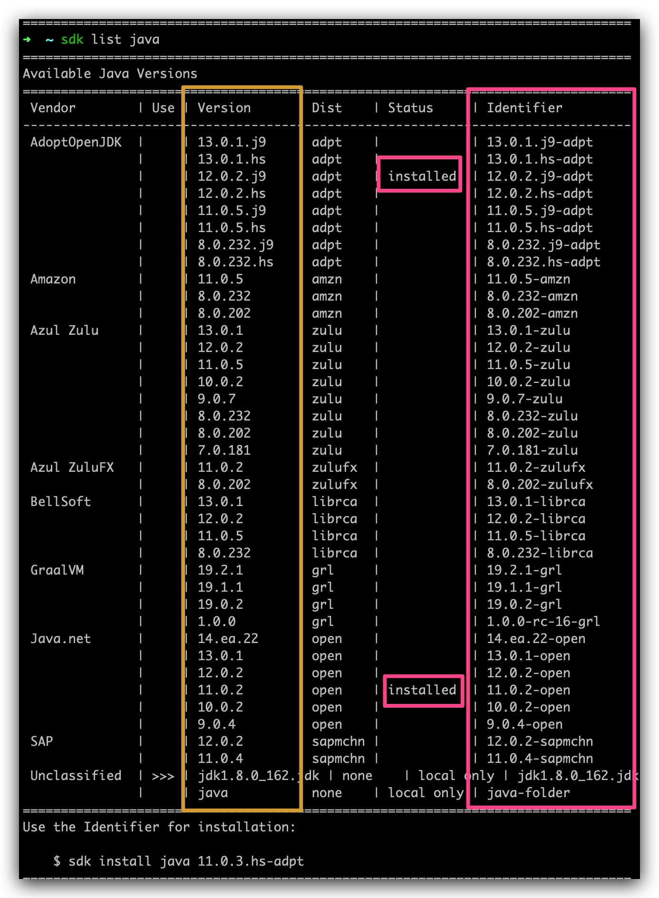
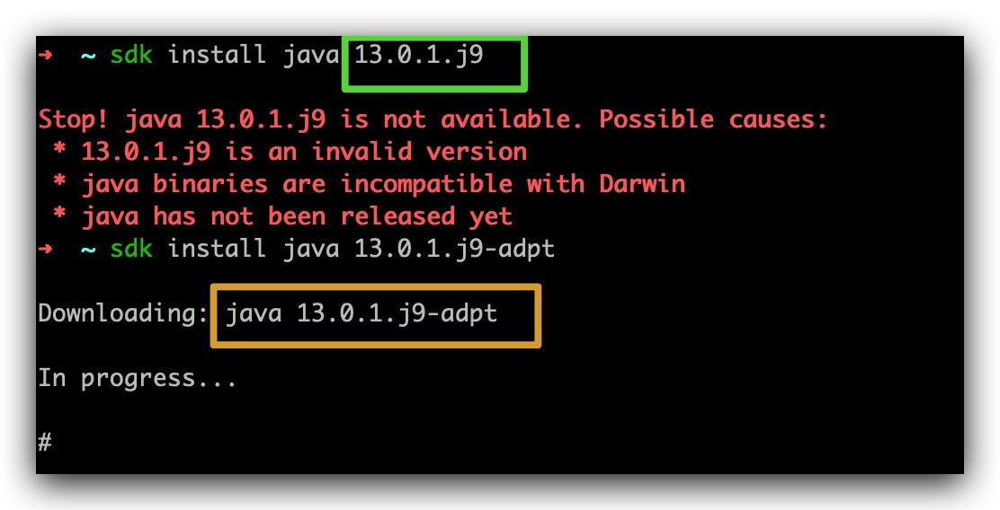
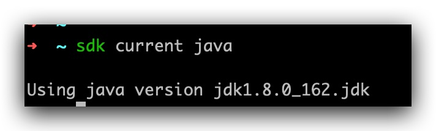
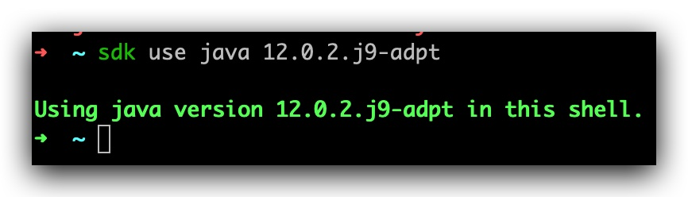
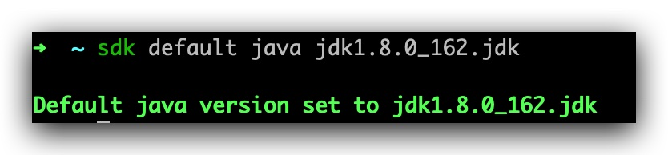
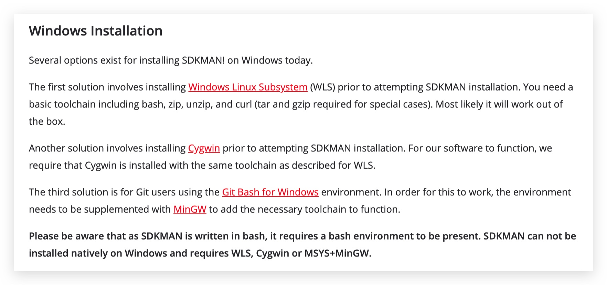

近两年，Java 版本升级频繁，感觉刚刚掌握 Java8，写本文时，已听到 java14 的消息，无论是尝鲜新特性(Java12 中 Collectors.teeing 超强功能使用)，还是由于项目升级/兼容需要，我们可能都要面临管理多个 Java 版本的情
另外 Oracle 自 Java11 开始，更改了用户协议，任何商用都会收费。在写本文时，得到消息「微软宣布加入 OpenJDK」，打不过就选择 OpenJDK。随便 G 一下，当个故事了解就可以
配置单个 Java 环境变量本身没什么技术含量可言，但当需要管理多个 Java 版本，重复配置环境变量显然是非常枯燥的，按照传统的配置方式我们又不能灵活的切换 Java 版本
那要如何轻松管理与使用多个版本 Java？
显然我们不是第一个有这种困境的人，我所知道的现有方案有三种:
本文主要说明如何通过 sdkman 打破我们面临的困境，帮助我们灵活配置与使用 Java
SDKMAN 是一个用于在大多数基于 Unix 系统上管理 多个软件开发工具包 (Java, Groovy, Scala, Kotlin and Ceylon. Ant, Gradle 等) 的并行版本的工具 。
它提供了一个方便的命令行接口 (CLI) 和 API，用于安装、切换、删除和列出候选对象。本文主要通过管理 Java 来说明 sdkman 的使用
在类 unix 平台上安装 sdkman 非常容易。它可以顺利的安装在Mac OSX、Linux、WLS、Cygwin、Solaris和FreeBSD 上，同时还支持Bash和 ZSH shell。
只需打开一个新终端机并输入:
$ curl -s "https://get.sdkman.io" | bash按照相应的指令提示，完成相应的操作后继续输入:
$ source "$HOME/.sdkman/bin/sdkman-init.sh"到这里我们就可以验证 sdk 的安装版本了:
$ sdk version
上图红色框标记显示我当前 sdkman 的版本，每次执行 sdk version 命令时，都会检查是否会有新版本，如果要更新输入 y 就可以
有些系统发行版本不包含 zip 和 unzip，如果安装时遇到相关错误，可以输入如下命令安装 zip 和 unzip
$ sudo apt-get install zip unzip从上面的安装命令上可以看出，sdkman 默认的安装路径是在$HOME/.sdkman 下，我们也可以自定义安装路径，只需要指定 SDKMAN_DIR 变量值就好了:
$ export SDKMAN_DIR="/usr/local/sdkman" && curl -s "https://get.sdkman.io" | bash
到这里 sdkman 的安装就结束了，我们来看看如何使用
命令行下学习一个新玩意当然是查看它的 help 命令，输入:
$ sdkman help
感觉上图按颜色区分内容后，sdkman 的使用说明也就结束了，我们按照上面的图来详细说明一下使用教程
先来输入:
$ sdk list
绿色的标记就是 sdkman 集成的所有可用的 candidate，通过按回车「enter」按键，会看到更多可用 candidate
我们指定 candidate，输入:
$ sdk list java
从上图中可以看到所有 java 可用的版本 version，以及标识 indentifier，以及状态 status，我已经安装了 java 12 和 11
有了这些信息做铺垫，我们可以安装任意 sdkman 内置的软件开发包了，继续以 java 为例
回看 sdkman help 命令的输出，使用 install 命令，我们再安装一个 Java 最新 13.0.1.j9 版本

从上图你可以看出，绿色标记的内容是 list 命令结果中的 version 值，但是报错不可用，输入indentifier 编号才能正常下载，这里需要注意
安装完后，status 就会编程 installed 状态
当安装多个版本的 java 时，我们输入下面命令获取当前正在用 candidate 的版本
$ sdk current java
了解了当前使用版本，如果我们想切换到其他版本, 可以输入:
$ sdk use java 12.0.2.j9-adpt注意⚠️: 这里同样是指定的 indentifier 的值

如果我们想指定某个版本为默认版本，可以输入:
$ sdk default java jdk1.8.0_162.jdk注意⚠️: 这里同样是指定的 indentifier 的值

当我们想卸载某个版本可以输入:
$ sdk uninstall java 12.0.2.j9-adpt注意⚠️: 这里同样是指定的 indentifier 的值
如果我们想升级某个 candidate，可以输入:
$ sdk upgrade java使用 sdkman 时间变长也会慢慢产生很多缓存内容，我们可以输入
清理广播消息:
$ sdk flush broadcast清理下载的 sdk 二进制文件(长时间使用后清理，可以节省出很多空间):
$ sdk flush archives清理临时文件内容:
$ sdk flush temp
到这里 sdkman 的基本使用就已经介绍完了，其实这些命令都不用急，想不起来的时候执行 sdk help 来临时查看一下就好
如果我们不喜欢 sdkman 了，我们也可以轻松的卸载掉它:
$ tar zcvf ~/sdkman-backup_$(date +%F-%kh%M).tar.gz -C ~/ .sdkman
$ rm -rf ~/.sdkman最后打开你的 .bashrc、.bash_profile 和/或者 .profile，找到并删除下面这几行。
#THIS MUST BE AT THE END OF THE FILE FOR SDKMAN TO WORK!!!
[[ -s "/home/dudette/.sdkman/bin/sdkman-init.sh" ]] && source "/home/dudette/.sdkman/bin/sdkman-init.sh"我用的 zshrc，找到 .zshrc 文件删除掉上面内容即可
到这里基于 Unix 系统的，有关 sdkman 的安装，使用及下载都已经介绍完了，可以上手试一试了，相信很多小伙伴用的是 Windows，除了 jenv， sdkman 和 Jabba 都有 windows 用户的解决方案:
在 sdkman 官网首页同样为 windows 用户提供了解决方案，小伙伴们找到如下位置查看即可

我看了一下过程，也是很简单，由于手头没有 windows 电脑，这个请小伙伴们自行尝试吧，有问题欢迎留言
你的灯还亮着吗？
欢迎持续关注公众号：「日拱一兵」
- 前沿 Java 技术干货分享
- 高效工具汇总 | 回复「工具」
- 面试问题分析与解答
- 技术资料领取 | 回复「资料」
以读侦探小说思维轻松趣味学习 Java 技术栈相关知识，本着将复杂问题简单化，抽象问题具体化和图形化原则逐步分解技术问题，技术持续更新，请持续关注......